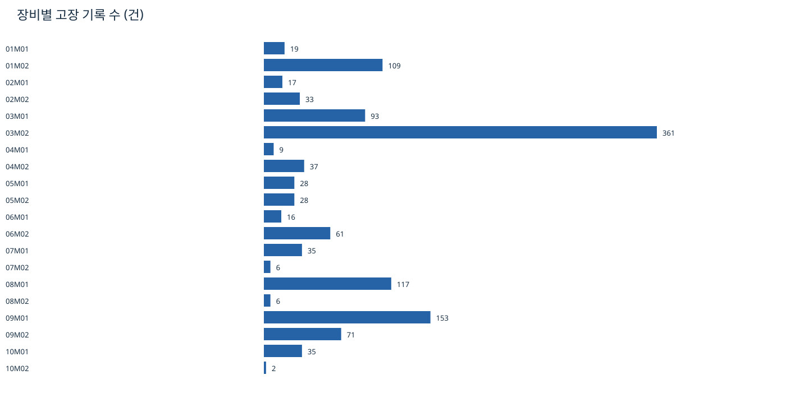
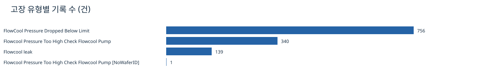
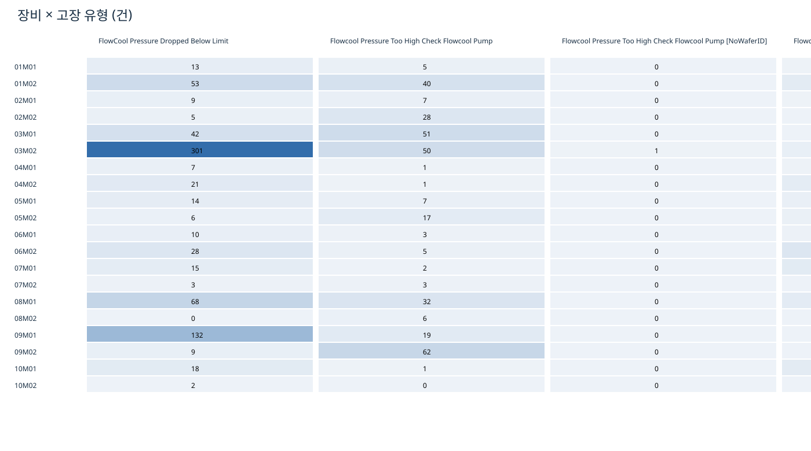
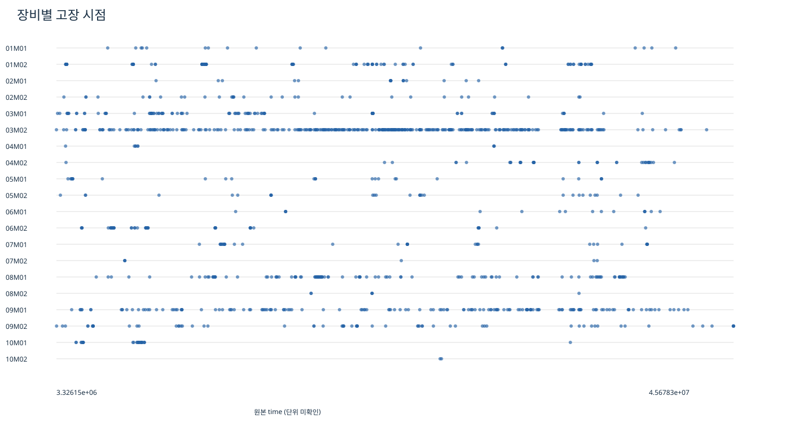
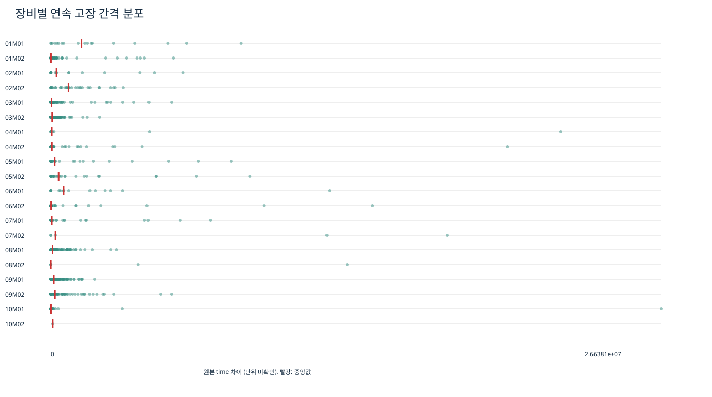

분석 범위: train_faults의 CSV 20개만. 모델 학습 및 예측 대상 최종 선정은 수행하지 않음.
원본 위치: ${PHM2018_DATA_ROOT}\train\train_faults
헤더를 제외한 CSV 한 행을 고장 기록 1건으로 계산했다. 중복도 임의 삭제하지 않은 원본 기준이다. 장비는 Tool 열로 구분하며 파일명과 대조했다. 고장 유형은 fault_name의 원문 문자열로 집계했다. 비율은 유형별 행 수 ÷ 전체 행 수 × 100이다. 교차표 각 셀은 해당 Tool과 fault_name을 동시에 만족하는 행 수이며, 행·열 합계를 개별 집계와 대조했다.
time에는 숫자만 있으며 이 CSV 자체에는 단위·기준 시각·시간대 설명이 없다. 따라서 달력 날짜나 초·일로 변환하지 않았다. 최초·마지막 시점은 장비별 min(time), max(time), span은 그 차이다. 장비 내부에서 time을 오름차순 정렬한 뒤 인접 시각 차이를 구했다. N건의 유효 시각에서 간격은 N−1개다. 평균은 간격 합÷간격 수, 중앙값은 정렬된 간격의 중앙값이다. 서로 다른 장비 사이의 시간 차이는 계산하지 않았다. 동일 유형 반복 간격은 장비와 fault_name으로 함께 묶어 동일 방식으로 계산했다.
이 간격은 기록 사이의 차이이며 실제 가동시간 기준 MTBF나 수리 후 재고장 시간으로 해석할 수 없다. 장비별 관측 시작·종료, 정상 구간, 수리 이력은 이번 범위에서 확인하지 않았다. 장비 간 기록 수 차이 역시 고장률 차이를 의미하지 않는다.
| 검사항목 | 결과 | |
|---|---|---|
| 0 | files | 20.00 |
| 1 | rows | 1,236.00 |
| 2 | tools | 20.00 |
| 3 | fault_types | 4.00 |
| 4 | duplicate_rows_involved | 50.00 |
| 5 | duplicate_excess | 25.00 |
| 6 | numeric_duplicate_rows_involved | 50.00 |
| 7 | same_tool_time_groups | 25.00 |
| 8 | same_tool_time_multiple_types | 0.00 |
| 9 | missing_cells | 0.00 |
| 10 | nonfinite_time | 0.00 |
| 11 | negative_time | 0.00 |
| 12 | backward_steps | 0.00 |
| 13 | zero_gaps | 25.00 |
| 14 | min_time | 3,326,152.00 |
| 15 | max_time | 45,678,266.00 |
중복은 (Tool, time 원문, fault_name)의 동일 조합으로 검사했으며, 숫자로 변환한 time 기준 중복도 별도 검사했다. 같은 장비·같은 시각에 여러 유형이 기록된 경우는 동시 고장 후보로 구분했다. 누락은 빈 문자열·공백 문자열, 시간 이상은 숫자 변환 불가/무한대·음수·소수·파일 원래 순서의 역행으로 검사했다. 매우 큰 시각이나 긴 간격은 단위와 관측 범위가 없어 오류로 단정하지 않았다. 실제 train 센서 시각 범위와의 정합성은 검사 범위 밖이다.
| file | rows | missing_cells | non_numeric_or_nonfinite | negative_time | fractional_time | backward_steps | tool_filename_mismatch | whitespace_cells | |
|---|---|---|---|---|---|---|---|---|---|
| 0 | 01_M01_train_fault_data.csv | 19 | 0 | 0 | 0 | 0 | 0 | 0 | 0 |
| 1 | 01_M02_train_fault_data.csv | 109 | 0 | 0 | 0 | 0 | 0 | 0 | 0 |
| 2 | 02_M01_train_fault_data.csv | 17 | 0 | 0 | 0 | 0 | 0 | 0 | 0 |
| 3 | 02_M02_train_fault_data.csv | 33 | 0 | 0 | 0 | 0 | 0 | 0 | 0 |
| 4 | 03_M01_train_fault_data.csv | 93 | 0 | 0 | 0 | 0 | 0 | 0 | 0 |
| 5 | 03_M02_train_fault_data.csv | 361 | 0 | 0 | 0 | 0 | 0 | 0 | 0 |
| 6 | 04_M01_train_fault_data.csv | 9 | 0 | 0 | 0 | 0 | 0 | 0 | 0 |
| 7 | 04_M02_train_fault_data.csv | 37 | 0 | 0 | 0 | 0 | 0 | 0 | 0 |
| 8 | 05_M01_train_fault_data.csv | 28 | 0 | 0 | 0 | 0 | 0 | 0 | 0 |
| 9 | 05_M02_train_fault_data.csv | 28 | 0 | 0 | 0 | 0 | 0 | 0 | 0 |
| 10 | 06_M01_train_fault_data.csv | 16 | 0 | 0 | 0 | 0 | 0 | 0 | 0 |
| 11 | 06_M02_train_fault_data.csv | 61 | 0 | 0 | 0 | 0 | 0 | 0 | 0 |
| 12 | 07_M01_train_fault_data.csv | 35 | 0 | 0 | 0 | 0 | 0 | 0 | 0 |
| 13 | 07_M02_train_fault_data.csv | 6 | 0 | 0 | 0 | 0 | 0 | 0 | 0 |
| 14 | 08_M01_train_fault_data.csv | 117 | 0 | 0 | 0 | 0 | 0 | 0 | 0 |
| 15 | 08_M02_train_fault_data.csv | 6 | 0 | 0 | 0 | 0 | 0 | 0 | 0 |
| 16 | 09_M01_train_fault_data.csv | 153 | 0 | 0 | 0 | 0 | 0 | 0 | 0 |
| 17 | 09_M02_train_fault_data.csv | 71 | 0 | 0 | 0 | 0 | 0 | 0 | 0 |
| 18 | 10_M01_train_fault_data.csv | 35 | 0 | 0 | 0 | 0 | 0 | 0 | 0 |
| 19 | 10_M02_train_fault_data.csv | 2 | 0 | 0 | 0 | 0 | 0 | 0 | 0 |
| fault_count | first_time | last_time | span | interval_n | min_gap | median_gap | mean_gap | max_gap | |
|---|---|---|---|---|---|---|---|---|---|
| Tool | |||||||||
| 01M01 | 19 | 6533184 | 42056638 | 35523454 | 18 | 1744 | 1,344,115.00 | 1,973,525.22 | 8294302 |
| 01M02 | 109 | 3907068 | 36797152 | 32890084 | 108 | 166 | 9,718.00 | 304,537.81 | 5357974 |
| 02M01 | 17 | 9557348 | 29732852 | 20175504 | 16 | 200 | 247,907.00 | 1,260,969.00 | 5761878 |
| 02M02 | 33 | 3793470 | 36074426 | 32280956 | 32 | 0 | 764,641.00 | 1,008,779.88 | 3149934 |
| 03M01 | 93 | 3396958 | 39968588 | 36571630 | 92 | 0 | 33,584.00 | 397,517.72 | 5283044 |
| 03M02 | 361 | 3326152 | 43992410 | 40666258 | 360 | 0 | 61,252.00 | 112,961.83 | 2126490 |
| 04M01 | 9 | 3897904 | 30703278 | 26805374 | 8 | 508 | 44,599.00 | 3,350,671.75 | 22262906 |
| 04M02 | 37 | 3926292 | 41977984 | 38051692 | 36 | 432 | 49,854.00 | 1,056,991.44 | 19920508 |
| 05M01 | 28 | 4047836 | 37417456 | 33369620 | 27 | 152 | 170,934.00 | 1,235,911.85 | 7878852 |
| 05M02 | 28 | 3574572 | 39706772 | 36132200 | 27 | 0 | 337,868.00 | 1,338,229.63 | 8687192 |
| 06M01 | 16 | 14535028 | 41084522 | 26549494 | 15 | 436 | 553,470.00 | 1,769,966.27 | 12162272 |
| 06M02 | 61 | 4901228 | 40178998 | 35277770 | 60 | 0 | 12,794.00 | 587,962.83 | 14035220 |
| 07M01 | 35 | 12267516 | 40283254 | 28015738 | 34 | 646 | 44,948.00 | 823,992.29 | 6959146 |
| 07M02 | 6 | 7601086 | 37150076 | 29548990 | 5 | 610 | 204,306.00 | 5,909,798.00 | 17292210 |
| 08M01 | 117 | 5816876 | 38897382 | 33080506 | 116 | 224 | 77,771.00 | 285,176.78 | 2874440 |
| 08M02 | 6 | 19254254 | 36011192 | 16756938 | 5 | 742 | 2,492.00 | 3,351,387.60 | 12941576 |
| 09M01 | 153 | 4279600 | 42819514 | 38539914 | 152 | 0 | 133,089.00 | 253,552.07 | 1908304 |
| 09M02 | 71 | 3333718 | 45678266 | 42344548 | 70 | 0 | 181,256.00 | 604,922.11 | 5279392 |
| 10M01 | 35 | 4557174 | 35471140 | 30913966 | 34 | 0 | 10,440.00 | 909,234.29 | 26638068 |
| 10M02 | 2 | 27325070 | 27410422 | 85352 | 1 | 85352 | 85,352.00 | 85,352.00 | 85352 |
| fault_count | tools | share_pct | |
|---|---|---|---|
| fault_name | |||
| FlowCool Pressure Dropped Below Limit | 756 | 19 | 61.17 |
| Flowcool Pressure Too High Check Flowcool Pump | 340 | 19 | 27.51 |
| Flowcool leak | 139 | 14 | 11.25 |
| Flowcool Pressure Too High Check Flowcool Pump [NoWaferID] | 1 | 1 | 0.08 |


| fault_name | FlowCool Pressure Dropped Below Limit | Flowcool Pressure Too High Check Flowcool Pump | Flowcool Pressure Too High Check Flowcool Pump [NoWaferID] | Flowcool leak |
|---|---|---|---|---|
| Tool | ||||
| 01M01 | 13 | 5 | 0 | 1 |
| 01M02 | 53 | 40 | 0 | 16 |
| 02M01 | 9 | 7 | 0 | 1 |
| 02M02 | 5 | 28 | 0 | 0 |
| 03M01 | 42 | 51 | 0 | 0 |
| 03M02 | 301 | 50 | 1 | 9 |
| 04M01 | 7 | 1 | 0 | 1 |
| 04M02 | 21 | 1 | 0 | 15 |
| 05M01 | 14 | 7 | 0 | 7 |
| 05M02 | 6 | 17 | 0 | 5 |
| 06M01 | 10 | 3 | 0 | 3 |
| 06M02 | 28 | 5 | 0 | 28 |
| 07M01 | 15 | 2 | 0 | 18 |
| 07M02 | 3 | 3 | 0 | 0 |
| 08M01 | 68 | 32 | 0 | 17 |
| 08M02 | 0 | 6 | 0 | 0 |
| 09M01 | 132 | 19 | 0 | 2 |
| 09M02 | 9 | 62 | 0 | 0 |
| 10M01 | 18 | 1 | 0 | 16 |
| 10M02 | 2 | 0 | 0 | 0 |



| Tool | fault_name | n | interval_n | min_gap | median_gap | mean_gap | max_gap | |
|---|---|---|---|---|---|---|---|---|
| 0 | 01M01 | FlowCool Pressure Dropped Below Limit | 13 | 12 | 1,744.00 | 1,475,972.00 | 2,960,287.83 | 15,385,248.00 |
| 1 | 01M01 | Flowcool Pressure Too High Check Flowcool Pump | 5 | 4 | 1,041,306.00 | 6,730,355.00 | 6,982,199.50 | 13,426,782.00 |
| 2 | 01M01 | Flowcool leak | 1 | 0 | 해당 없음 | 해당 없음 | 해당 없음 | 해당 없음 |
| 3 | 01M02 | FlowCool Pressure Dropped Below Limit | 53 | 52 | 448.00 | 19,442.00 | 632,501.62 | 9,921,892.00 |
| 4 | 01M02 | Flowcool Pressure Too High Check Flowcool Pump | 40 | 39 | 490.00 | 5,708.00 | 487,103.74 | 9,205,414.00 |
| 5 | 01M02 | Flowcool leak | 16 | 15 | 474.00 | 239,352.00 | 2,190,070.53 | 10,313,636.00 |
| 6 | 02M01 | FlowCool Pressure Dropped Below Limit | 9 | 8 | 756.00 | 2,355,654.00 | 2,424,805.75 | 5,761,878.00 |
| 7 | 02M01 | Flowcool Pressure Too High Check Flowcool Pump | 7 | 6 | 2,200.00 | 2,352,418.00 | 2,714,015.33 | 6,797,474.00 |
| 8 | 02M01 | Flowcool leak | 1 | 0 | 해당 없음 | 해당 없음 | 해당 없음 | 해당 없음 |
| 9 | 02M02 | FlowCool Pressure Dropped Below Limit | 5 | 4 | 3,914.00 | 344,959.00 | 1,305,922.00 | 4,529,856.00 |
| 10 | 02M02 | Flowcool Pressure Too High Check Flowcool Pump | 28 | 27 | 0.00 | 901,560.00 | 1,195,590.96 | 3,149,934.00 |
| 11 | 03M01 | FlowCool Pressure Dropped Below Limit | 42 | 41 | 0.00 | 137,684.00 | 770,415.76 | 15,520,762.00 |
| 12 | 03M01 | Flowcool Pressure Too High Check Flowcool Pump | 51 | 50 | 472.00 | 62,237.00 | 719,559.92 | 6,746,934.00 |
| 13 | 03M02 | FlowCool Pressure Dropped Below Limit | 301 | 300 | 0.00 | 69,220.00 | 113,915.94 | 1,431,564.00 |
| 14 | 03M02 | Flowcool Pressure Too High Check Flowcool Pump | 50 | 49 | 0.00 | 197,212.00 | 796,083.51 | 8,023,746.00 |
| 15 | 03M02 | Flowcool Pressure Too High Check Flowcool Pump [NoWaferID] | 1 | 0 | 해당 없음 | 해당 없음 | 해당 없음 | 해당 없음 |
| 16 | 03M02 | Flowcool leak | 9 | 8 | 554.00 | 8,453.00 | 1,176,641.00 | 6,513,290.00 |
| 17 | 04M01 | FlowCool Pressure Dropped Below Limit | 7 | 6 | 4,998.00 | 44,599.00 | 3,750,581.67 | 22,262,906.00 |
| 18 | 04M01 | Flowcool Pressure Too High Check Flowcool Pump | 1 | 0 | 해당 없음 | 해당 없음 | 해당 없음 | 해당 없음 |
| 19 | 04M01 | Flowcool leak | 1 | 0 | 해당 없음 | 해당 없음 | 해당 없음 | 해당 없음 |
| 20 | 04M02 | FlowCool Pressure Dropped Below Limit | 21 | 20 | 432.00 | 43,287.00 | 682,692.70 | 4,830,992.00 |
| 21 | 04M02 | Flowcool Pressure Too High Check Flowcool Pump | 1 | 0 | 해당 없음 | 해당 없음 | 해당 없음 | 해당 없음 |
| 22 | 04M02 | Flowcool leak | 15 | 14 | 3,810.00 | 544,421.00 | 1,201,463.71 | 4,665,544.00 |
| 23 | 05M01 | FlowCool Pressure Dropped Below Limit | 14 | 13 | 770.00 | 25,834.00 | 1,757,682.15 | 9,566,688.00 |
| 24 | 05M01 | Flowcool Pressure Too High Check Flowcool Pump | 7 | 6 | 188,792.00 | 1,311,065.00 | 3,892,058.33 | 11,548,748.00 |
| 25 | 05M01 | Flowcool leak | 7 | 6 | 1,456.00 | 121,915.00 | 5,561,603.33 | 31,212,552.00 |
| 26 | 05M02 | FlowCool Pressure Dropped Below Limit | 6 | 5 | 0.00 | 17,024.00 | 4,187,019.20 | 11,384,292.00 |
| 27 | 05M02 | Flowcool Pressure Too High Check Flowcool Pump | 17 | 16 | 96,700.00 | 538,331.00 | 2,258,262.50 | 10,754,030.00 |
| 28 | 05M02 | Flowcool leak | 5 | 4 | 1,734.00 | 3,851.00 | 1,753,698.50 | 7,005,358.00 |
| 29 | 06M01 | FlowCool Pressure Dropped Below Limit | 10 | 9 | 744.00 | 771,936.00 | 1,189,472.44 | 2,610,508.00 |
| 30 | 06M01 | Flowcool Pressure Too High Check Flowcool Pump | 3 | 2 | 961,932.00 | 13,274,747.00 | 13,274,747.00 | 25,587,562.00 |
| 31 | 06M01 | Flowcool leak | 3 | 2 | 436.00 | 3,111.00 | 3,111.00 | 5,786.00 |
| 32 | 06M02 | FlowCool Pressure Dropped Below Limit | 28 | 27 | 1,370.00 | 7,320.00 | 858,829.33 | 16,449,604.00 |
| 33 | 06M02 | Flowcool Pressure Too High Check Flowcool Pump | 5 | 4 | 4,904.00 | 26,873.00 | 7,795,095.50 | 31,121,732.00 |
| 34 | 06M02 | Flowcool leak | 28 | 27 | 0.00 | 18,574.00 | 961,580.81 | 14,035,220.00 |
| 35 | 07M01 | FlowCool Pressure Dropped Below Limit | 15 | 14 | 1,294.00 | 383,000.00 | 1,887,859.57 | 10,299,934.00 |
| 36 | 07M01 | Flowcool Pressure Too High Check Flowcool Pump | 2 | 1 | 5,029,074.00 | 5,029,074.00 | 5,029,074.00 | 5,029,074.00 |
| 37 | 07M01 | Flowcool leak | 18 | 17 | 1,188.00 | 21,476.00 | 1,569,622.82 | 11,405,862.00 |
| 38 | 07M02 | FlowCool Pressure Dropped Below Limit | 3 | 2 | 204,306.00 | 6,126,804.00 | 6,126,804.00 | 12,049,302.00 |
| 39 | 07M02 | Flowcool Pressure Too High Check Flowcool Pump | 3 | 2 | 610.00 | 1,586.00 | 1,586.00 | 2,562.00 |
| 40 | 08M01 | FlowCool Pressure Dropped Below Limit | 68 | 67 | 1,098.00 | 208,794.00 | 488,641.31 | 3,585,870.00 |
| 41 | 08M01 | Flowcool Pressure Too High Check Flowcool Pump | 32 | 31 | 2,896.00 | 37,498.00 | 824,054.77 | 9,207,174.00 |
| 42 | 08M01 | Flowcool leak | 17 | 16 | 932.00 | 25,402.00 | 1,037,212.62 | 13,365,250.00 |
| 43 | 08M02 | Flowcool Pressure Too High Check Flowcool Pump | 6 | 5 | 742.00 | 2,492.00 | 3,351,387.60 | 12,941,576.00 |
| 44 | 09M01 | FlowCool Pressure Dropped Below Limit | 132 | 131 | 0.00 | 120,506.00 | 253,919.57 | 1,908,304.00 |
| 45 | 09M01 | Flowcool Pressure Too High Check Flowcool Pump | 19 | 18 | 19,410.00 | 238,526.00 | 281,046.00 | 863,358.00 |
| 46 | 09M01 | Flowcool leak | 2 | 1 | 15,871,340.00 | 15,871,340.00 | 15,871,340.00 | 15,871,340.00 |
| 47 | 09M02 | FlowCool Pressure Dropped Below Limit | 9 | 8 | 0.00 | 106,259.00 | 2,591,086.75 | 14,806,692.00 |
| 48 | 09M02 | Flowcool Pressure Too High Check Flowcool Pump | 62 | 61 | 0.00 | 248,666.00 | 694,172.92 | 5,279,392.00 |
| 49 | 10M01 | FlowCool Pressure Dropped Below Limit | 18 | 17 | 0.00 | 51,622.00 | 1,818,468.59 | 26,813,184.00 |
| 50 | 10M01 | Flowcool Pressure Too High Check Flowcool Pump | 1 | 0 | 해당 없음 | 해당 없음 | 해당 없음 | 해당 없음 |
| 51 | 10M01 | Flowcool leak | 16 | 15 | 730.00 | 15,428.00 | 45,039.87 | 219,412.00 |
| 52 | 10M02 | FlowCool Pressure Dropped Below Limit | 2 | 1 | 85,352.00 | 85,352.00 | 85,352.00 | 85,352.00 |
| original_rows | unique_records | duplicate_excess | |
|---|---|---|---|
| fault_name | |||
| FlowCool Pressure Dropped Below Limit | 756 | 741 | 15 |
| Flowcool Pressure Too High Check Flowcool Pump | 340 | 332 | 8 |
| Flowcool leak | 139 | 137 | 2 |
| Flowcool Pressure Too High Check Flowcool Pump [NoWaferID] | 1 | 1 | 0 |
동일 조합 중복 25그룹은 각 2행으로, 관련 행은 50행이고 첫 행만 남기는 가정에서 제외되는 행은 25행이다. 중복을 제외하면 총 1,211개 조합이며 장비 내부 전체 유형 간격 수는 1,191개가 된다. 주 집계는 원본 1,236행과 간격 1,216개를 유지했다. 0 간격 25개는 모두 동일 조합 중복에서 발생했다. 중복이 수집 중복인지 실제 복수 기록인지는 판정하지 않았다.
아래 순서는 사례 수 기준 검토 순서이며 통계적으로 충분한 표본 수를 보장하지 않는다.
| fault_count | tools | share_pct | |
|---|---|---|---|
| fault_name | |||
| FlowCool Pressure Dropped Below Limit | 756 | 19 | 61.17 |
| Flowcool Pressure Too High Check Flowcool Pump | 340 | 19 | 27.51 |
| Flowcool leak | 139 | 14 | 11.25 |
| Flowcool Pressure Too High Check Flowcool Pump [NoWaferID] | 1 | 1 | 0.08 |
FlowCool Pressure Dropped Below Limit: 756건, 19개 장비, 전체의 61.17%. 사례 수가 많을수록 우선 검토하기 쉽지만 장비별 편중과 독립 사건 여부를 확인해야 한다.
Flowcool Pressure Too High Check Flowcool Pump: 340건, 19개 장비, 전체의 27.51%. 사례 수가 많을수록 우선 검토하기 쉽지만 장비별 편중과 독립 사건 여부를 확인해야 한다.
Flowcool leak: 139건, 14개 장비, 전체의 11.25%. 사례 수가 많을수록 우선 검토하기 쉽지만 장비별 편중과 독립 사건 여부를 확인해야 한다.
Flowcool Pressure Too High Check Flowcool Pump [NoWaferID]: 1건, 1개 장비, 전체의 0.08%. 사례 수가 많을수록 우선 검토하기 쉽지만 장비별 편중과 독립 사건 여부를 확인해야 한다.
[NoWaferID]가 붙은 유형은 03M02에서 1건뿐이므로 독립 예측 유형으로는 사례 수가 매우 제한적이다. 일반 고압 유형 340건과의 의미상 관계를 확인하기 전에는 병합하지 않는다. 중복 제외 시의 후보별 건수는 위 민감도 표를 참조한다. 저압 유형 중 03M02에 301건이 몰려 있어 장비별 편중도 고려해야 한다.
추가 후보로 모든 유형을 합친 “임의 고장 발생” 이진 예측을 검토할 수 있다. 전체 기록 수는 양성 라벨 후보 수일 뿐 독립 학습 표본 수가 아니다. 다중 유형 분류 역시 후보이나 가장 적은 유형의 사례 수와 장비별 분포가 제약이다. 정상/음성 구간, 센서 연결, 예측 선행 시간, 사건 병합 기준 및 장비·시간 분할이 확인되지 않아 성능이나 최종 대상을 결정하지 않았다.
프로젝트 루트는 현재 Git 저장소가 아니고 기존 .gitignore가 없어 새로 추가했다. 데이터 폴더(train, test, train_faults, phm_data_challenge_2018 접두 폴더), 원본 파일명 패턴과 압축파일을 제외한다. D드라이브 원본은 프로젝트 밖에 있고 이번 작업에서 복사하지 않았다. 향후 Git 저장소에 이미 추적 중인 파일이 있다면 .gitignore만으로 추적이 해제되지는 않는다. 현재 저장소가 없어 추적 파일 목록이나 git check-ignore 검증은 수행할 수 없다.
source_manifest.csv에 각 원본의 행 수·바이트 수·SHA-256을 기록했고 분석 종료 시 다시 비교했다. 집계 CSV는 파생 결과이며 원본 CSV를 복사하거나 수정하지 않았다. 모든 장비 집계·유형 집계·교차표의 합계가 전체 행 수와 일치하는지 검사했다.